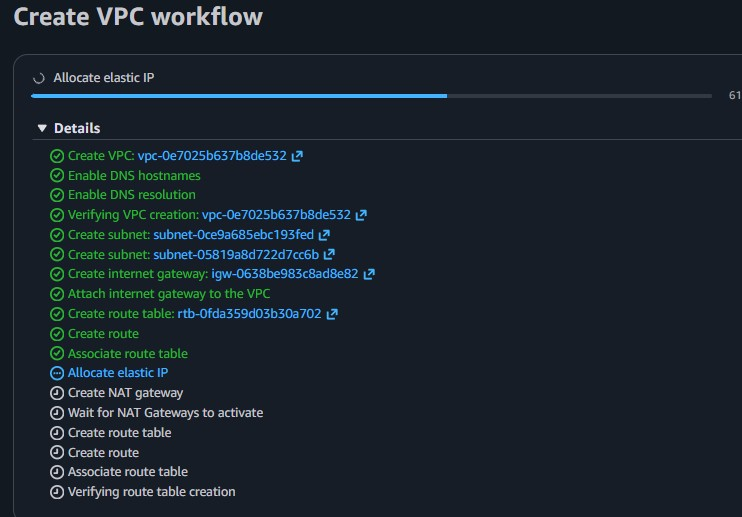
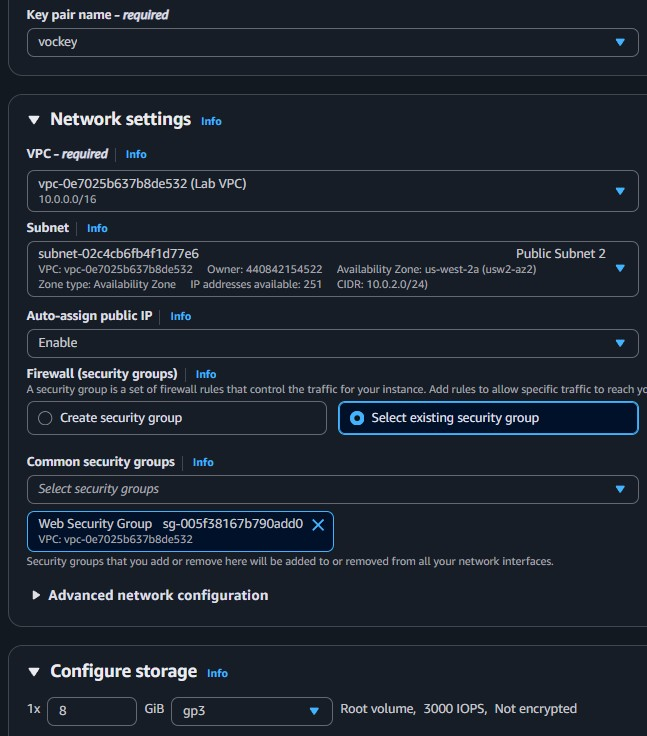
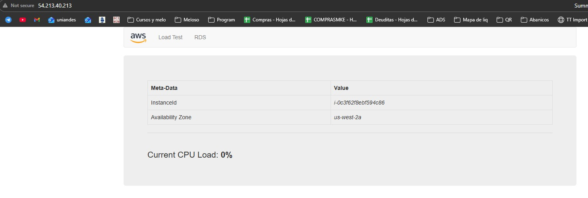

Network Architecture Configuration
The network was built in two phases: utilizing the AWS "VPC and more" wizard for the initial foundation, then manually provisioning redundant subnets across a secondary Availability Zone.
The Gateway & Foundation
Establishing the global boundaries for the isolated cloud infrastructure using the visual VPC Wizard.
VPC NameLab VPC
IPv4 CIDR10.0.0.0/16
Internet GatewayAttached
Availability Zone 1 (us-west-2a)
The primary subnets created via the wizard during the VPC initialization.
Public Subnet 110.0.0.0/24
Private Subnet 110.0.1.0/24
RoutingImplicitly Mapped
Availability Zone 2 (us-west-2b)
Secondary subnets created manually to ensure High Availability (HA) failover capabilities.
Public Subnet 210.0.2.0/24
Private Subnet 210.0.3.0/24
RoutingExplicitly Mapped
Security Perimeter
A VPC-level instance firewall explicitly defining the allowed protocols entering the web subnets.
NameWeb Security Group
TypeInbound IPv4 HTTP
Source TrafficAnywhere (0.0.0.0/0)

Web Server Deployment
With the networking structure complete, a compute instance was injected into the Public Subnet 2.
Bootstrapping with User Data: Rather than logging in via SSH to manually configure the server, a bash script was supplied at launch to automate the installation of Apache Web Server and deploy the lab application immediately on boot.
#!/bin/bash
# Install Apache Web Server and dependencies
yum install -y httpd mysql php
# Download Lab files
wget https://aws-tc-[...]/lab-app.zip
unzip lab-app.zip -d /var/www/html/
# Turn on web server daemon and ensure it survives reboots
chkconfig httpd on
service httpd start

Key Learnings
✓
Multi-AZ Deployments: Creating subnets across multiple Availability Zones protects architectures against data center failures. Subnets cannot span multiple AZs by definition.
✓
Route Table Associations: Creating a subnet is not enough. You must manually associate new subnets with the correct Route Table (Public vs. Private) for them to inherit internet accessibility.
✓
Automation via User Data: Sending scripts via
User Data on EC2 launch eliminates the need for manual SSH sessions when setting up identical fleets of web servers.